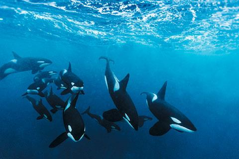

소개
범고래는 참돌고래과에 속하는 고래 중 큰 종이다.
극지방부터 열대지방까지 널리 발견되는 이빨고래이다.범고래는 상당히 능동적인 포식자이다. 물고기를 주로 먹는 무리들도 있지만 바다사자나 다른 고래들을 사냥하는 무리도 있다.
범고래는 지능이 매우 높고 사회적인 동물이며 상당히 안정된 사회를 형성한다. 다른 과의 고래들과 다르게 범고래는 전 세계적으로 멸종위기에 놓이지는 않았으나 해양오염과 먹이감소 때문에 몇몇 지역에선 존망 위기를 맞고 있다.
외관
범고래는 검정색 등, 하얀 가슴과 옆,그리고 눈 주위의 흰 무늬가 특징이다. 갓난 범고래는 약간 노란색 혹은 주황색으로 태어나 점차 흰색으로 바쒼다.
약 1.8m까지 자라는 큰 등지느러미를 가지고 있다. 남극에서 서식하는 개체는 회색이나 흰 등을 지니기도 한다. 수컷의 몸길이는 6~8m이며 몸무게는 7t 정도 된다.
돌고래와 달리 범고래의 가슴지느러미는 크고 둥글다. 수컷의 가슴지느러미가 암컷보다 훨씬 크다. 등지느러미 또한 수컷이 암컷보다 두배정도 크며 길쭉한 이등변삼각형처럼 생겼다. 암컷의 등지느러미는 짧고 둥글다.
특징
범고래는 복잡하지만 안정적인 사회를 형성한다. 비이주성 범고래 무리는 다른 포유류의 사회보다도 더 안정적이며, 양성의 개체가 평생 어미와 함께 살면서 모계 사회를 형성한다.
암컷의 수명이 최대 90년 정도로 긴 편이기 때문에 4대에서 5대까지 대가족을 형성하는 경우가 자주 있다.
범고래는 해양 포유류 중에서 두 번째로 무거운 뇌를 가지고 있다. 범고래 사이엔 방언도 있으며 서로 안정된 언어와 행동문화를 가지고 있다.
